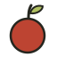

Identity folio / 2026
Visit the orchard ↗usufruct
Keep the tree. Share the fruit.
An orchard for future fees.
A living position. A finite harvest. Separate rights.

Paper, ink & patience.
A catalogue to explore. A specimen to examine. A cabinet to return to. The identity takes its shape from orchard records and the care with which they describe what is held.
Generous letters. Exact figures. Fine rules.
Enough room for a decision.
The visual vocabulary
The fruit gives a position its colour. Rules keep the information together. Italics carry the voice; typewritten details do the work.
A fruit mark is a visual metaphor. It is not a promise of profit, a monthly tranche, or a guaranteed payout.
From the orchard.
Four accents on one sheet of warm paper. Colour belongs to the specimen; financial states always have a written label.
Two voices.
One record.
The orchard
A share of future fruit.
Instrument Serif Italic / display & specimen names
ABCDEFGHIJKLMNOPQRSTUVWXYZ
abcdefghijklmnopqrstuvwxyz
0123456789 / 0.05% / USDC
Courier Prime / details, controls & exact quantities
A small share.
A complete period.
One position. Two rights.
The original NFT can return.
Unpaid fee claims stay with their holders.
Shown here as graphic notation only.
Not an offer or a financial record.
Marks to keep.
The wordmark is outlined vector artwork; the fruit mark stays crisp at any size. Type is self-hosted under the SIL Open Font License.
{kind=link}
{kind=link}